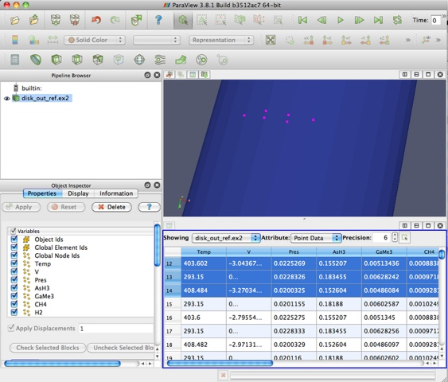

Spreadsheet View
In several cases it’s very useful to look at the raw dataset. This is where the Spreadsheet view comes in handy.
Spreadsheet View allows users to explore the raw data in a spreadsheet-like display. Users can inspect cells and points and data values associated with these using this view. This makes it a very useful for drilling down into the data.
Spreadsheet View, as the name suggests is a view i.e. users can create one by splitting the main-view frame in the application client-area. Refer to the chapter on Views for details on views. Spreadsheet View can only show one dataset at a time. However, users can use ParaView’s multi-view capabilities to create multiple spreadsheet views for inspecting different datasets.

Inspecting Large Datasets
Spreadsheet View is a client-only view i.e. it delivers the necessary data to the client, when running in client-server mode. Additionally, it is not available through Python scripting (except when running through the Pyhton shell provided by the ParaView application) or batch scripting. Furthermore, when running on a tile-display, the area covered by the spreadsheet on the client simply shows up as a blank region on the tiles.
Unlike complex views like the 3D render view, that can generate the renderings on the server and simply deliver images to the client, the spreadsheet view requires that the data is available on the client. This can be impractical when inspecting really large datasets since the client may not even have enough memory, even if we assume infinite bandwidth. To address such issues, the Spreadsheet View streams the data to the client, only fetching the data for the row currently visible in the viewport.
Double Precision
Using the precision spin-box in the view header, users can control the precision for floating point numbers. The value determines the number of significant digits after the decimal point.
Selection with Spreadsheet View
Spreadsheet View, in many ways, behaves like typical spreadsheet applications. One can scroll, select rows using mouse clicks, arrow keys and modifiers like Shift and Ctrl keys, sort columns by clicking on the header. Additionally, one can double-click on a column header to toggle the maximization of a column for better readability.
On selecting rows the corresponding cells or points will get selected and ParaView will highlight those in other views, such as the 3D view. Conversely, when one makes a selection in the 3D View or the chart views, one the rows corresponding to the selected cells/points will be highlighted in the spreadsheet view. Of course, for the view to highlight the selection, the selected dataset must be the one that’s being shown in the spreadsheet view. To make it easier to inspect just the selected elements, one check the “Show only selected” button on the view header.
When in “Show only Selected” mode, one can no longer create selections on the Spreadsheet view. One has to use the other views to make the selection and the Spreadsheet view will automatically update to show the details for the items that got selected.
Spreadsheet View can show data associated with cells, points or even field data. To choose what attribute the view shows, one can use the attribute-type combo-box. The selection created by the view depends on the attribute-type, i.e. when if user selects in the view when attribute type is “Points”, points in the dataset will be selected. The spreadsheet view also performs selection conversions if possible, i.e. if you select a cell in the 3D view, however you the spreadsheet view is setup to show points, then the view will highlight the points that form the selected cell.
The Spreadsheet View may add several additional data columns which may not be present in the your actual data. These data-columns are either derived information such as the (i, j, k) co-ordinates for structured data or provide additional information about the data, e.g. block index for composite datasets, or provide additional information about the data distribution such as process-id when connected to a parallel server (pvserver or pvdataserver).
Working with Composite Datasets
 Spreadsheet
view works seamlessly with different kinds of dataset types
including composite datasets such as multi-block datasets or AMR
datasets. When dealing with composite datasets, the view shows one
block at a time. Users can choose the block to inspect by using the
display tab.
Spreadsheet
view works seamlessly with different kinds of dataset types
including composite datasets such as multi-block datasets or AMR
datasets. When dealing with composite datasets, the view shows one
block at a time. Users can choose the block to inspect by using the
display tab.
 Options
for the Histogram filter are:
Options
for the Histogram filter are: